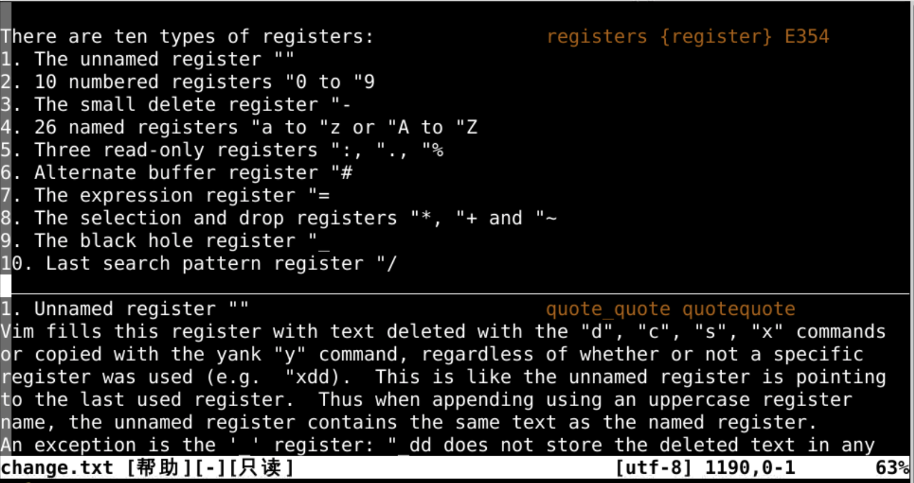
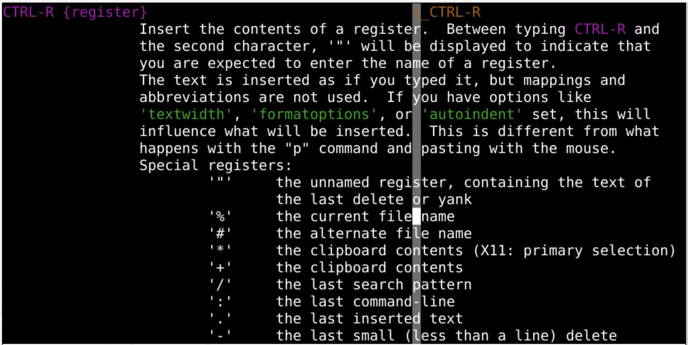
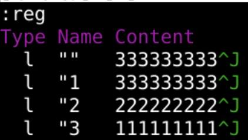
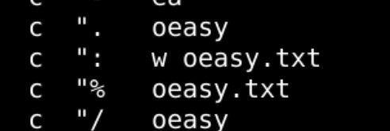
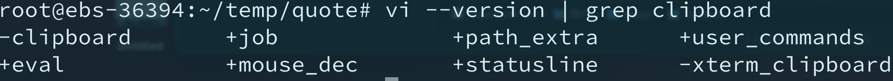
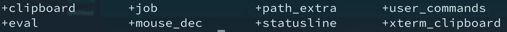
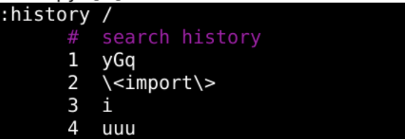
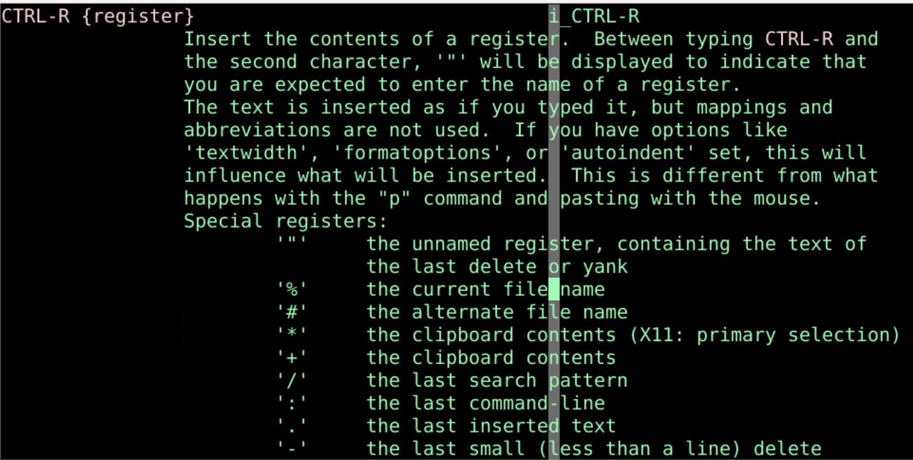

各寄存器
回忆上节课内容🤔
- 上次是复制粘贴
- y就是把东西
yank到寄存器里，就是复制
- d就是把东西
delete到寄存器里，就是剪切
yank也可以配合motion
- 不管是
yank、delete都是把东西放到默认寄存器
- 默认的是`""``
- 除了默认的之外
- 还有什么可玩的寄存器？🤔
- 我们可以查一下手册
:h reg(ister)

寄存器
- 我们平时用的都是无名寄存器，其实有很多种寄存器的
- 无名寄存器
""
- 数字寄存器
"0-"9
- 行内删除专用寄存器
"-
- 指定寄存器
"a-"z、"A-"Z
- 3个只读寄存器
":、".、"%
- 轮换文件寄存器
"#
- 表达式寄存器
"=
- 选择和拖拽寄存器
"*、"+、"~
- 黑洞寄存器
"_
- 搜索模式寄存器
"/
无名寄存器""
- 我们最熟悉的默认寄存器
- d、x 删除内容默认寄存器
- y 复制内容默认寄存器
- p粘贴也是从默认寄存器里面找内容粘贴
- 不声明的话都用这个默认寄存器
- 可以通过
:reg "查看默认寄存器
- 一般我们都先切换到正常模式
- 然后再粘贴
- 可以在插入模式下粘贴么
插入模式
- 插入模式下按ctrl+r
- 状态栏cmd区域会出现
^R
- 然后按下默认寄存器对应的
"就可以了

数字寄存器"0-"9
"0 中存储的是最近yank的内容"1-"9 中存储的是最近删除的内容
- 最新的放在
"1
- 然后一次往后顺
- 除非用了制定寄存器
"x
- 默认都在这里存一份
- 可以一边删除
- 一边
:reg观察

行内删除专用寄存器"-
指定寄存器"a-"z、"A-"Z
- 平常的x都是不指定寄存器的
- 但是如果是"ax就是指定
寄存器a 的了
- 删除的东西会放在
"a这个寄存器中
- d、y等命令也一样
- 默认是操作
""寄存器
- 指定了别的寄存器就用指定好的寄存器
- 这样我们就有了
26个可用的寄存器
- 如果我们使用
"A
- 就会把原来
"a里的内容和新进入剪贴板的东西拼合在一起
- 就是追加写入
a 寄存器
- 我们也可以用"ap把指定好的寄存器里面的东西
put出来
- 具体可以去试一试
- 观察
showcmd 的具体效果
3个只读寄存器":、".、"%
- 这三个寄存器都是只读的
". 里面存储着上次插入的内容"% 里面存储着当前文件的名字": 里面存储着刚刚执行的命令
- 可以
':reg看一下
- 也可以"%p粘贴出来

轮换文件寄存器 "#
- 这个涉及到轮换文件
"#
- 就得打开多个文件
- 比较复杂
- 先跳过去
表达式寄存器"=、
- 这个可以计算比如
"=3+3
- 注意左下角小地图
- 然后摁下p
- 就会把6粘贴出来
选择和拖拽寄存器"*、"+、"~
- 这个特别实用！！！
- 要牢记！！！
- 是从系统的剪切版里面粘贴
- 比如
"*p就是从系统剪切板进行粘贴
"*yy就是把本行粘贴到系统剪贴板上- 插入模式下ctrl+r
- 然后*
- 就可以直接把剪切板内容放进来
- 但是有的时候vim不支持clipboard操作
使用剪切板

- -减号意味着没有安装功能
- +加号意味着安装了功能
- apt install vim-gtk3安装

- 在~/.vimrc中设置
- set clipboard=unnamed,unnamedplus
黑洞寄存器"_
- 下划线寄存器
- 这是一个黑洞
- 放进去的东西哪里也不存
- 就消失了
搜索模式寄存器"/
- 这个对应着上次的用/进行搜索的内容
- 如果想查看更多搜索命令就
:history /

重温插入模式
- 我们在插入模式下
- 按下ctrl+r
- 然后按下寄存器的名字
- 比如默认寄存器"
- 就可以把默认寄存器里面的东西粘贴过来
- 而且还保持在插入模式
:h i_ctrl-r

总结
- 这次我们了解到了各种寄存器
:reg
- 无名寄存器
""
- 数字寄存器
"0-"9
- 行内删除专用寄存器
"-
- 指定寄存器
"a-"z、"A-"Z
- 3个只读寄存器
":、".、"%
". 里面存储着上次插入的内容"% 里面存储着当前文件的名字": 里面存储着刚刚执行的命令
- 轮换文件寄存器
"#
- 表达式寄存器
"=
- 选择和拖拽寄存器
"*、"+、"~
- 黑洞寄存器
"_
- 搜索模式寄存器
"/
- 插入模式下ctrl+r 再加寄存器名称，可以粘贴寄存器中的内容
- d、x、y、p都在在正常模式
- 删除之后能否自动切换进入插入模式呢？🤔
- 下次再说 👋